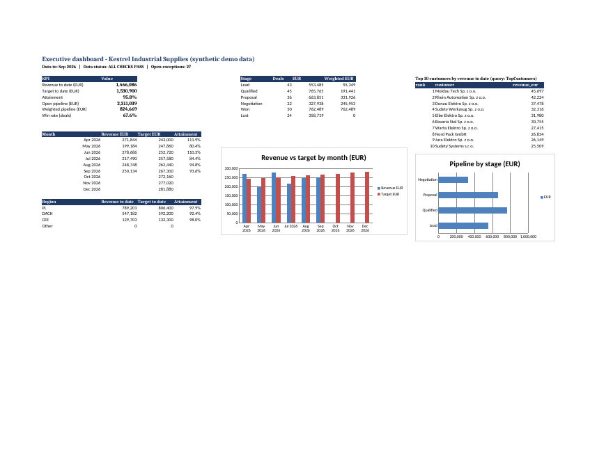

One Excel workbook that pulls monthly sales exports from two regional files, CRM accounts and deals (CSV) and a targets file, then refreshes a one-page executive dashboard. Every number ties back to its source rows, and anything that cannot load cleanly is listed on an Exceptions sheet instead of being dropped silently. All data is synthetic (fictional company "Kestrel Industrial Supplies").

44 automated tests pass, plus 1 expected failure recorded as a missed threshold. A Python mirror of the Power Query logic is checked against an independent pandas recount, and the workbook formulas are recalculated in LibreOffice.
Honest caveats: Power Query does not run on Linux, so Refresh All in Excel is untested (a 10-point Excel checklist is included). A 1-cent rounding difference against Excel is possible. The handover and non-technical reviewer tests still need a person.